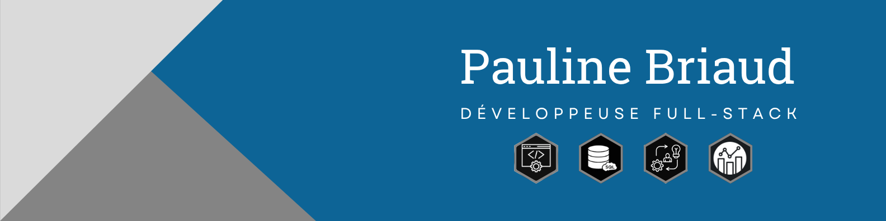
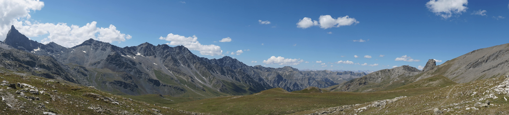
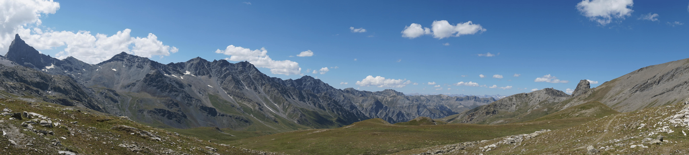

Bienvenue sur mon Portfolio
Hello! Je suis Pauline, en réconversion dans le développement. Je vous partage mes premiers projets personnels menés en parallèle de ma formation chez M2i. Vous pouvez retrouver d'autres projets dans le cadre de mon auto-apprentissage sur mes différents profils.
CV

Blog
(à venir) 
(à venir) 